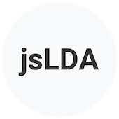

Programma
Il workshop, della durata di una giornata, si svilupperà in due fasi principali: una prima fase di presentazione delle tematiche da un punto di vista teorico, arricchita dall’esposizione delle esperienze di lavoro dei relatori, con riferimento anche agli strumenti che verranno utilizzati, e una seconda fase, dedicata all’utilizzo da parte degli studenti, supervisionati dai relatori, degli strumenti introdotti in precedenza. In particolare, i temi della Stilometria, Network analysis, Annotazione e spatial analysis saranno affrontati sia a livello teorico sia attraverso attività di carattere pratico. Inoltre, si chiederà ai partecipanti del workshop di organizzarsi in "gruppi di discussione", i quali, nella parte conclusiva dell'evento, avranno l'opportunità di riportare impressioni, commenti, problemi aperti e potenzialità di una delle metodologie presentate.

Introduzione
9:00 - 9:30
Cos'è il distant reading
9:30 - 10:00
Stilometria
10:00 - 11:00
Pausa
11:00 - 11:15
Network analysis
11:15 - 12:15
